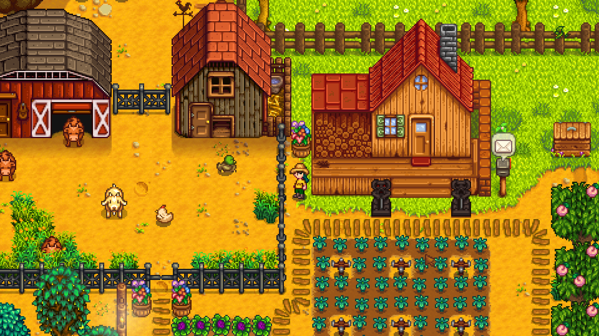

COMPANIA NOASTRĂ
DESPRE POLUS
Jocuri mici. Idei mari.
Polus este o companie imaginară care creează și prezintă propriile jocuri. Ne plac lumile colorate, personajele simpatice și aventurile pe care le descoperi în ritmul tău.
Site-ul a pornit de la pasiunea pentru jocuri și design pixel-art. Este realizat pentru un proiect școlar, iar jocurile și prețurile sunt exemple.
Ce ne inspiră
- Poveștile simple, dar memorabile.
- Jocurile retro și arta pixel.
- Libertatea de a explora și de a crea.

Jocurile din magazin
| Joc | Gen | Platformă |
|---|---|---|
| Moon Post | Explorare | PC |
| Night Shift | Platformer | PC |
| Pocket Garden | Simulare | PC |
| Grid Racer | Curse | PC |